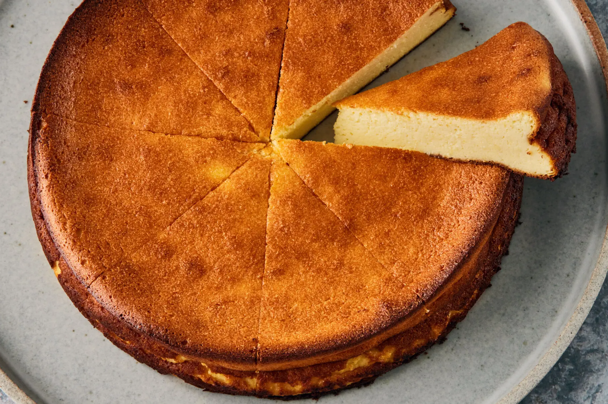
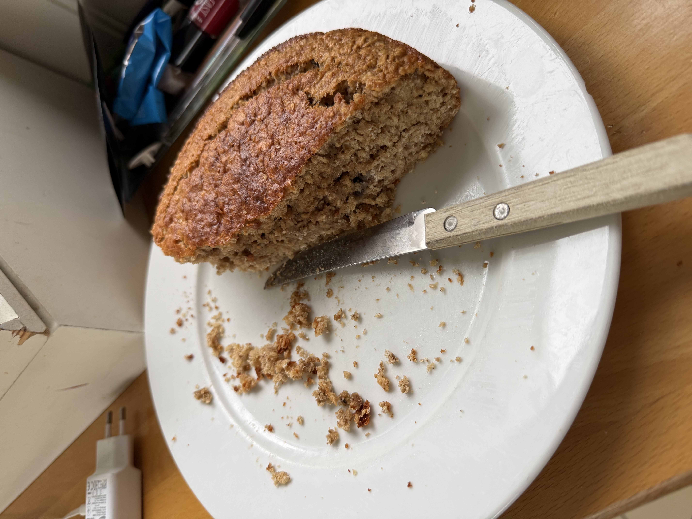
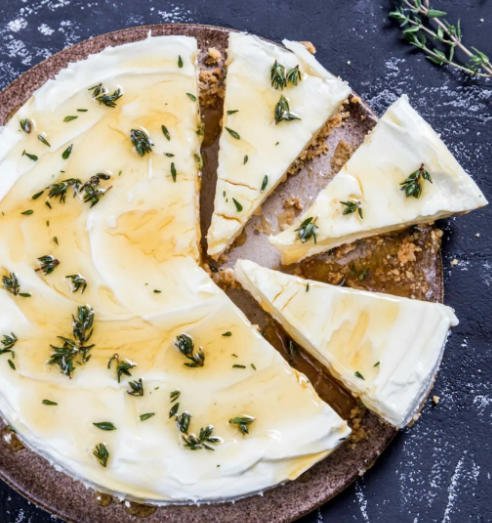

A red velvet cake is a type of layer cake that is traditionally made
with a combination of cocoa powder, buttermilk, and vinegar, which
gives it a distinctive red color and a slightly tangy flavor. The cake
is typically layered with cream cheese frosting and is often decorated
with red or white sprinkles or other toppings. Red velvet cake is a
popular dessert for special occasions such as birthdays, weddings, and
holidays.
Turkish Yoghurt Cake

A Turkish yoghurt cake is a type of cake that is made with yoghurt as
one of the main ingredients. The yoghurt gives the cake a moist and
tender texture, and it also adds a slightly tangy flavor. The cake is
typically flavored with vanilla or lemon zest and may be topped with a
simple glaze or powdered sugar. Turkish yoghurt cake is a popular
dessert in Turkey and is often served with tea or coffee.
Carrot Cake

A carrot cake is a cake that is typically made with carrots, cream
cheese, and spices. It is often topped with a cream cheese frosting
and may be decorated with additional carrots or other toppings. Carrot
cake is a popular dessert for special occasions such as birthdays,
weddings, and holidays.
No-Bake Cheesecake

a no-bake cheesecake is a type of cheesecake that does not require
baking in an oven. Instead, it is typically made by combining cream
cheese, sugar, and other ingredients such as whipped cream or gelatin
to create a creamy filling that is poured into a crust made from
crushed cookies or graham crackers. The cheesecake is then chilled in
the refrigerator until it sets, resulting in a smooth and creamy
dessert that can be served cold. No-bake cheesecakes are often topped
with fruit, chocolate, or other toppings for added flavor and
decoration.
Carrot pancake
A carrot pancake is a type of pancake that is made with grated carrots
as one of the main ingredients. The carrots add moisture and a subtle
sweetness to the pancake, and they also provide a nice texture. Carrot
pancake is often served with syrup or butter and can be a delicious
breakfast or brunch option.